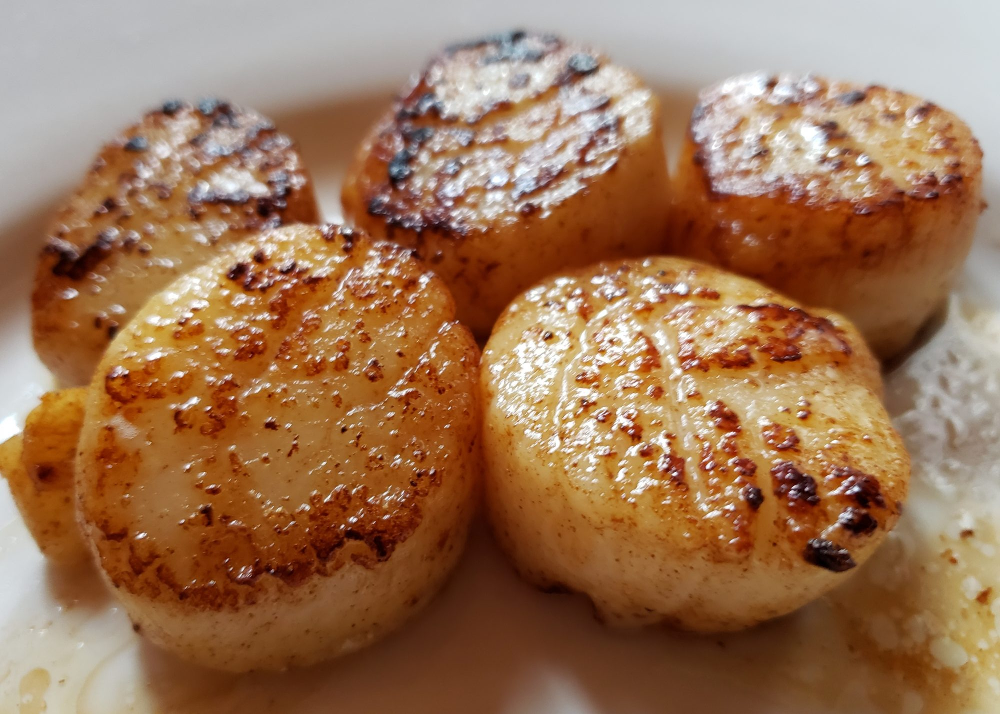

Easy Garlic-Lemon Scallops
Scallops sauteed in butter and garlic will melt in your mouth. Lemon juice gives it a nice kick.

Ingredients
- ¾ cup butter
- 3 tablespoons minced garlic
- 2 pounds large sea scallops
- 1 teaspoon salt
- ⅛ teaspoon pepper
- 2 tablespoons fresh lemon juice
Directions
- Melt butter in a large skillet over medium-high heat. Stir in garlic, and cook for a few seconds until fragrant. Add scallops, and cook for several minutes on one side, then turn over, and continue cooking until firm and opaque.
- Remove scallops to a platter, then whisk salt, pepper, and lemon juice into butter. Pour sauce over scallops to serve.
Nutrition Facts
Per Serving:
408 calories; protein 38.5g; carbohydrates 8.9g; fat 24.4g; cholesterol 152.4mg; sodium 987.9mg. Full Nutrition